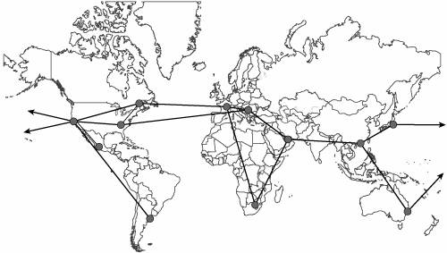

Introducing AC CorporationWith a presence in more than 40 countries, AC Corporation's business is founded on innovation that delivers the best set of agricultural products and services. Producing and delivering new products, growing through acquisitions, and licensing goods around the world has driven AC to deploy Internet connectivity, which enables its employees, partners, and customers to access the data independently of their location and time table. AC corporate headquarters is located in San Francisco. Business is split between North America, Latin and Central America, Asia, Europe, and Africa/Middle East. Each region has its set of local headquarters, listed in Table 15-1, linked through dedicated circuits from provider T-World, which was selected for its global presence.
T-World also provides the peering for Internet access (IA) in the different regions. Smaller branches and storage areas take advantage of local broadband access and VPN technologies to connect to their nearest regional headquarters in a cost-effective communications solution. Figure 15-1 shows the global coverage of the AC intranet worldwide. Figure 15-1. AC Geographical Network Map Over the years, e-Commerce became a leading market-coverage expansion strategy for AC. This drives the IT department to continuously monitor emerging technologies, which can add value to the company business. After participating in a couple of IPv6 Forum (http://www.ipv6forum.com) and National IPv6 Task Forces (http://www.ipv6tf.org) events, the IT team decided to evaluate IPv6's potential. The evaluation considered possible business drivers for IPv6 integration in the AC corporate network, including competitive advantages regarding market segments and adoption in regions where AC does business. |